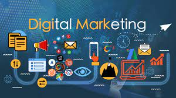

.png)
Content Writing
 Content writing is another way of generating content. Communication is such a content generation process
that is done through texts. While video and audio formats have evolved and developed over recent years,
content writing has been the medium of content generation ever since people started communicating.
Initially, the written content was limited to journals, books, poetry and stories, theories, and
philosophies. This was before even the evolution of printing culture. The print media was a huge
revolution. It was a remarkable step that was taken towards the development of content generation.
Along with time, content writing has developed at a tremendous rate in terms of the processes involved.
In this era of booming internet, almost all the industries need content marketing and for that, the
major source of the content generated for such companies is in text format.
In the coming years, any business no matter what it sells will find the need to have a website. Having a
website means, it needs content to interact with the audience and therefore, one can expect a larger
space for content writers in the coming years.
Companies rely a lot on content writing for their marketing and promotional content. Content writing has
grown at an exponential rate, and this is very clear from the fact that around 2 million blog posts are
uploaded every single day on the internet, and what’s even more interesting is that there will be a
surge in internet users in the next 4-5 years.
Internet expects around 5million people into the content writing industry in the coming 5 years. Many
people think that content writing is outdated, as the medium of communications has changed and the
reduced price of the internet easily allows access to advanced mediums such as video formats.
But the truth is content writing will continue to be the major medium of communication till the day the
internet continues to commoditize everything.
Content writing is another way of generating content. Communication is such a content generation process
that is done through texts. While video and audio formats have evolved and developed over recent years,
content writing has been the medium of content generation ever since people started communicating.
Initially, the written content was limited to journals, books, poetry and stories, theories, and
philosophies. This was before even the evolution of printing culture. The print media was a huge
revolution. It was a remarkable step that was taken towards the development of content generation.
Along with time, content writing has developed at a tremendous rate in terms of the processes involved.
In this era of booming internet, almost all the industries need content marketing and for that, the
major source of the content generated for such companies is in text format.
In the coming years, any business no matter what it sells will find the need to have a website. Having a
website means, it needs content to interact with the audience and therefore, one can expect a larger
space for content writers in the coming years.
Companies rely a lot on content writing for their marketing and promotional content. Content writing has
grown at an exponential rate, and this is very clear from the fact that around 2 million blog posts are
uploaded every single day on the internet, and what’s even more interesting is that there will be a
surge in internet users in the next 4-5 years.
Internet expects around 5million people into the content writing industry in the coming 5 years. Many
people think that content writing is outdated, as the medium of communications has changed and the
reduced price of the internet easily allows access to advanced mediums such as video formats.
But the truth is content writing will continue to be the major medium of communication till the day the
internet continues to commoditize everything.
Digital Marketing
 At a high level, digital marketing refers to advertising delivered through digital channels such as search engines, websites, social media, email, and mobile apps. Using these online media channels, digital marketing is the method by which companies endorse goods, services, and brands. Consumers heavily rely on digital means to research products. For example, Think with Google marketing insights found that 48% of consumers start their inquiries on search engines, while 33% look to brand websites and 26% search within mobile applications. While modern day digital marketing is an enormous system of channels to which marketers simply must onboard their brands, advertising online is much more complex than the channels alone. In order to achieve the true potential of digital marketing, marketers have to dig deep into today’s vast and intricate cross-channel world to discover strategies that make an impact through engagement marketing. Engagement marketing is the method of forming meaningful interactions with potential and returning customers based on the data you collect over time. By engaging customers in a digital landscape, you build brand awareness, set yourself as an industry thought leader, and place your business at the forefront when the customer is ready to buy. By implementing an omnichannel digital marketing strategy, marketers can collect valuable insights into target audience behaviors while opening the door to new methods of customer engagement. Additionally, companies can expect to see an increase in retention. According to a report by Invesp, companies with strong omnichannel customer engagement strategies retain an average of 89% of their customers compared to companies with weak omnichannel programs that have a retention rate of just 33%. As for the future of digital marketing, we can expect to see a continued increase in the variety of wearable devices available to consumers.
Gaming
The global gaming market (hereafter referred to as the market studied) was valued at USD 173.70 billion in 2020, and it is expected to reach a value of USD 314.40 billion by 2026, registering a CAGR of 9.64% over 2021-2026. Due to nationwide lockdown, people stay home, and some turn to game platforms to pass the time. These platforms are attracting more than hundreds and thousands of new visitors in online traffic. Video gaming trends have experienced a massive surge in players and revenue recently. Companies like Microsoft, Nintendo, Twitch, and Activision have all reached new heights in player investment. In April 2020, Microsoft reported that subscribers to Xbox Game Pass, a Netflix-like subscription service, topped 10 million. Among those subscribers, Microsoft also reported a 130-percent increase in multiplayer engagement across March and April. Cloud gaming is an emerging technology across the industry that allows users to stream high-end games across hand-held devices, such as laptops, tablets, and mobiles, with fast network connectivity, eliminating the need for a dedicated gaming console/PC. Cloud gaming services are focused on leveraging hyper-scale cloud capabilities, global content delivery networks, and streaming media services to build the next generation of social entertainment platforms. Such factors have an anticipated positive impact on market growth. 5G is also driving the mobile-based VR gaming market. For instance, in May 2020, Archiact announced its partnership with Migu (a subsidiary of telecom provider China Mobile) for Archiact's games that would be the first VR games to be playable via Migu's 5G cloud gaming platform, named Migu Quick Gaming. Also, by partnering with Migu, Archiact states that it can work together to build the future of 5G VR cloud gaming, making VR even more accessible. Moreover, the increasing applications of immersive technologies, such as virtual reality, augmented reality, and mixed reality, are anticipated to be a cornerstone in the gaming industry. Companies such as BigScreenVR and AltspaceVR are some of the prominent players in this segment.
T-shirt Designing
The graphic design shirts segment held the largest market share of more than 56% in 2020. The high share is attributable to the rising demand for custom t-shirts with pre-printed graphics. Graphic design t-shirts involve the printing of an existing design that does not require any further modifications. Such pre-printed graphic design t-shirts are preferred by customers who want the product immediately at a lesser price.The artwork segment is expected to emerge as the fastest-growing segment, registering a CAGR of 10.3% from 2021 to 2028. The growing preference of customers towards using t-shirts or other apparel to support a cause or deliver a message is expected to contribute to the high growth of this segment. The artwork segment involves custom artwork created by an individual to be printed on the t-shirt. Consumers who wish to print their designs or have a clear picture of the desired print are the potential customers of artwork designed for t-shirts.Prominent players in the market are Vistaprint B.V.; Threadbird LLC; Printful Inc.; CafePress, Inc.; and Blue Gecko (UK) Ltd. These market participants are focusing on several strategies to gain a higher market share. Mergers, acquisitions, partnerships, and other contractual agreements are being announced by these market players to emerge as the top custom printing companies. Moreover, these players are investing in research and development activities to bring new products to the market. Additionally, the companies are trying to expand their business operations to serve more customers with shorter delivery times. For instance, in October 2019, Printful Inc. announced the opening of its second fulfillment center in Europe to serve European customers in a better way and to meet the demand for faster shipping.
Beta testing apps
One of the cool things about seeing new apps in the app store or witnessing new video games come out is the fact that everyday users get to test the products before they hit the market. That sounds like an awesome side job to me! Yes, you can get paid to test games and mobile apps. In this blog post, you'll learn how it works, how much you can make, and who's hiring. This is a great alternative to website testing jobs. Apps need to be user-friendly and one of the best ways to find out is to hiring beta testers so you can get real feedback before officially launching the product. Usually, most developers and companies will go to a 3rd party website or source to hire beta-testers who are just everyday people and real app users or video game players. Once they register and pay a fee, the testers get to sign up to use the product and offer feedback. As a tester, your role may vary depending on the project's needs but you'll be able to accept the project and all the tasks first 5G is also driving the mobile-based VR gaming market. For instance, in May 2020, Archiact announced its partnership with Migu (a subsidiary of telecom provider China Mobile) for Archiact's games that would be the first VR games to be playable via Migu's 5G cloud gaming platform, named Migu Quick Gaming. Also, by partnering with Migu, Archiact states that it can work together to build the future of 5G VR cloud gaming, making VR even more accessible. Moreover, the increasing applications of immersive technologies, such as virtual reality, augmented reality, and mixed reality, are anticipated to be a cornerstone in the gaming industry. Companies such as BigScreenVR and AltspaceVR are some of the prominent players in this segment.